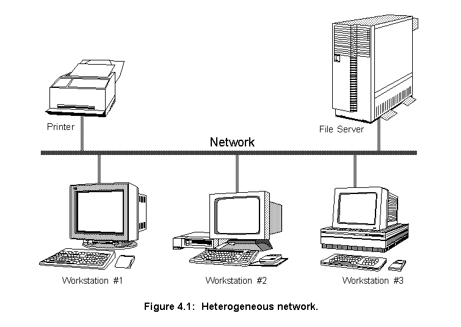
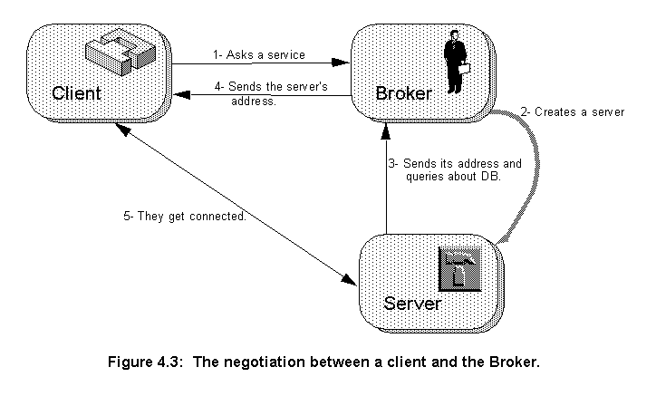

Software agents can be used to partition large software into smaller units, in the software industry agents can play an important role in a product suite [53]. Suites are a set of applications that used to operate in isolation, but have been integrated to help reduce the cost of software ownership and improve productivity. Applications can communicate and use each other's resources to accomplish a bigger task. Because they still are independent programs, they can run in parallel in different machines, thus improving performance.

Coordination models represent one way to deal with this increased control complexity coherently and uniformly. A coordination model establishes logical roles and associated behaviours (for applications that assume such roles) for executing distributed interactions [51].
One coordination model widely used in distributed systems is the client/server architecture. A program, the client, requests an operation or service that some other application, the server, provides. When a server receives a client request, it performs the requested service and returns to the client any results. A client interface specifies the individual services or operations offered by the server.
The client/server model offers simplicity in closely matching the flow of data with the control flow. In addition, the model promotes modular, flexible, and extensive system designs. Data resources and computing services can be organized, integrated and used as a service. Services include operating system functions, such as naming and authentication; shared information resources, such as printers and file systems; and applications, such as database and electronic mail. Programs can sometimes act either as servers or clients, for instance a relational database server (such as Oracle) reading a file from a file server is acting as a client (of the file server), but when it gives the retrieved information to the application that requested it, it is acting as a server.
Stream sockets were chosen as the communication method between the servers because a secure and simple method was required. Using stream sockets and the C++ iostream library, it was possible to develop a simple stream pipe between the servers.
Servers and clients send commands through the sockets as ASCII strings using Lisp [54] like languages. This form was chosen because Lisp is easy and fast to parse and extend, it facilitates debugging (the messages can be easily read) and for compatibility with EDIF (Electronic Design Interchange Format) [55]. EDIF is a standard Lisp like language used to represent electronic designs. The arrangement of stream sockets plus ASCII Lisp languages is so simple, that it is possible to make a telnet connection with any server, type in the commands and read the servers answers.
After starting, the servers will connect to a client and interpret all strings coming from it as an EDIF language statement. In addition to the EDIF standard commands, the servers will perform the three commands shown in table 4.1. All the other commands in EDIF will be accepted as well, for instance, the client can send in cell libraries. Also the set of commands can be expanded easily. All the servers will answer the commands using EDIF as well.
| Command | Action | Answer |
|---|---|---|
(DIE) | Kills the server. | None |
(CLEAR) | Clear the library and design data in the servers. | (LIST OK) |
(ROUTE (EDIF ...))or (PLACE (EDIF ...)) | Route or Place the circuit sent in the command (EDIF....). The command EDIF, shown here only partially, encodes a full circuit description. | (EDIF ...)or
|
The main difference between Squeme and Common Lisp (the ANSI standard for the Lisp language) is simplicity. The designers of Squeme believe that programming languages should be designed not by piling up features, but by removing the weaknesses and restrictions that make additional features appear necessary. Squeme demonstrates that a very small set of rules for forming expressions, with no restrictions on how they are composed, is enough to create a practical and efficient language that is able to support the main programming paradigms. The Squeme standard [56] is just 55 pages long, probably the smallest standard for any mainstream language.
Because it is simple, Squeme is fast, portable and easy to use, which makes it a perfect language for rapid prototyping. For this reasons there are many implementations of Squeme. The STk Squeme implementation [57] was chosen because it is available in source code, it is compact and easy to extend and because it incorporates the Tk toolkit [58]. The Tk toolkit is a powerful graphical toolkit that offers high level widgets, such as buttons, menus and canvas and is easy to use, requiring little knowledge of the X11 windows system fundamentals. Tk was originally built on top of an interpretative shell-like language called Tcl [59]. STk replaces Tcl with Squeme, producing a very powerful graphical rapid prototyping system. Even though the STk graphic capabilities aren't important for the final Agents system, they were paramount during the development stage, giving an invaluable insight into the program's workings.
To allow STk to interpret commands from a stream socket, it was necessary to extend the core STk commands with two new ones: server-command-socket and client-command-socket. The first command creates a socket and listens to it until a connection to a client is established, it is used to create servers. The second command creates a socket and connects it to specified host socket, it is used to create clients. Both commands will, after connection, interpret strings coming out of the sockets as Squeme language commands. All this listen and connection activity is implemented using the notifier mechanism supplied by the Tk library, for this reason any other activity going on at the same time in the program, such as text editing or button operation, will not freeze waiting for a connection to get started or for data to be received.
Figure 4.2 shows the database server window, named db. The figure shows the button Quit, that kills the application, and a text widget showing all the queries received and their answers. This window is not essential to the database server, it is used to show the flow of information to help debugging the program.
The Database server stores its information in hash tables, the information is assessed using a very simple language. The queries state the type of the information they are looking for and to which elements (usually layers) this information refers. For instance:
(minSpacing ndiff cont)This query is looking for information concerning minimum space between two elements: the layers ndiff and pdiff.
The answer for all queries is sent back in EDIF format, this is implemented this way because the clients of the Database server, the Placer and Router server, can parse EDIF but not Squeme. Of course, if necessary in the future, this capability can be added to them. The answer to the minSpacing query is then (E 15 -7), which represents 1.5 mm.
The data for each particular process is read from a process description file. The data tables are created by the command:
(data-command (<type> <number of elements> (<description>) ...)The field
<type> is the type of the query, <number of elements> is the number of elements the query refers to, and the <description> is a list containing a particular combination of elements and the information this combination should retrieve. The command to make the minSpacing query table can be created like this:
(data-command
'(minSpacing 2
(NWELL NWELL (E 85 -7))
(NWELL NDIFF (E 65 -7))
(POLY VIA (E 20 -7))
...
))
The <number of element> field can be 0, in which case the query does not refer to any elements and always returns the same value. Table 4.1 shows some of the information kept by the two process design rules used currently by the servers.
| Query | Meaning | Answer |
|---|---|---|
(minWidth <l1>) | Minimum width of layer <l1> | EDIF number |
(minSpacing <l1> <l2>) | Minimum separation between layers <l1> and <l2>.. | EDIF number |
(minOverlapping <l1> <l2>)) | Minimum overlapping of layer <l1> over layer <l1>. | EDIF number |
(layersNames) | The names of all layers available in the process. | EDIF list |
(gridValue) | Minimum dimension allowed by the process' rules. | EDIF number |
An agent server called Broker was created to coordinate the access of applications to the Placer, Router and Database servers. It was written in Squeme and, like the Database agent server, the Broker interprets Squeme commands sent in by a stream socket connection with a client. On top of Squeme, the Broker implements a sub-set of the KQML (Knowledge Query and Manipulation Language) [60].
Each agent appears to KQML as if it manages a knowledge base (KB). That means, communication with the agent is with regard to this KB. However, the implementation of an agent is not necessarily structured as a knowledge base, a wrapper code then has to translate the representation used in the agent into a knowledge base abstraction for the benefit of the other agents. For this reason it is said that each agent manages a virtual knowledge base (VKB). Agents talk about the contents of their and other's VKB using KQML, but they can represent statements in their VKBs in a variety of languages.
Each message in KQML language is a list of components enclosed in matching parenthesis. The first word in the list indicates the type of communication, the subsequent entries are parameters, identified by keywords. The Broker recognizes three default parameters for all messages (table 4.1) and it defines four types of communications (table 4.1).
| Parameter | Meaning |
|---|---|
:content | The information about which the query express an attitude. |
:language | The name of the representation language of the :content parameter. It defaults to Squeme. |
| :sender | A symbol representing the sender of the query. |
| Type | Meaning |
|---|---|
tell | Queries of this type indicate that the :contents sequence is in the sender's VKB. |
evaluate | Queries of this type indicate that the sender would like the recipient to evaluate the expression in the :contents parameter. |
| ask-one | Extra parameter :aspect <expression>.Queries of this type indicate that the sender wishes to know if the |
| recommend-one | Queries of this type indicate that the sender wants the recipient to reply with the name of an agent that is particularly suited to the kind of processing indicated by :contents. |
The Broker does a lot of the housekeeping that would, otherwise, have to be undertaken by its clients. The Broker will start the Database agent server when it starts, there is only one Database per Broker. It will start the requested server, Placer or Router, for the client if there is not any available and the resources in the system allow it. It will start the servers on predefined hosts. The client does not have to worry about the network address of any server. Indeed, the only server it needs to know the address of is the Broker, all the other addresses will be supplied by the Broker. Finally the Broker will clean up all the servers it started when it is shut down. The Broker decouples the clients from the implementation details of the servers, the only service that needs to be advertised is the Broker itself.
When an application wants to use any of the services provided by the serves it starts a negotiation with the broker (fig. 4.3). The following dialogue would then take place:
1- Application asks a service: To Broker:(recommend-one :sender ap1 :content 'placer)Broker sends back Placer's identity: Answer:(list 5)2- Broker starts a new Placer server to serve the client's requests. 3- The recent created server (Placer or Router) sends back to the Broker its address and finds out the Database server's address: To Broker:(tell :sender 5 :content '(myPort 6565))Answer:(list OK)New server asks the Database server address: To Broker:(recommend-one :sender 5 :content 'processDB)Answer:(list 0)To Broker:(ask-one :sender 5 :aspect 'address :content 0)Answer:(list eagle 7676)4- Application asks the service's address: To Broker:(ask-one:senderap1:aspect'address:content5)Answer:(list stork 6565)The Broker knows the Placer's machine because it created it. If the application asks the service's address before it is available, the Broker answers(list sorry)and the application should keep trying. 5- The application begins to talk to the Placer server directly: To service:(place(edifshiftreg.cir(designshiftreg...)))Answer:(edifshiftreg.cir(design shiftreg...))
The client in this negotiation can be either an application trying to use one of the services or the Placer server asking the Broker to use a Router. Similarly to the Database server the Broker has a window to display information. As shown in figure 4.4, the window shows the dialogue between the Broker and its clients and has a quit button to shut it down.
The graphics server displays layout views and other graphic information about the internal states of a client. As shown in figure 4.5, this server shows not only layout, but vectors, illustrating to where the algorithm is going and rectangles, showing crashes or terminals. The server has the buttons:
* Quit - Quit the server.
* Clear - Clear the graphic window.
* In - Zoom into the design.
* Out - Zoom out of the design.
* Layers Setting - It pops up a menu containing all the layers names and allows the user to show each layer with only its contours or completely painted.
* Redraw - Redraws the design in the graphic window.
On the bottom of the window, there is a bar showing the contours and colours representing all layers. It shows if the elements of a layer are being shown only by their contour or if they are being full painted.
The client server model is widely used nowadays, it is the model of choice for the majority of the commercial distributed applications. Programs ranging from the simple Telnet utility to huge distributed business-wide databases are based in this model, and, as networked systems became more and more common, more applications are bound to adhere to this model.
Next
Contents
Talk to me